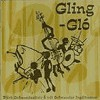
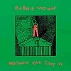
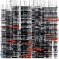

strange music page
* * * 2002.3
#最近、1/2くらいの確率で
地下鉄で逆の電車に乗っちゃいます。
2002.2
/
2002.4
-2002.3.24
#
リチャードシンクレア@南青山
、最高。
-2002.3.23
#最近のハマリもの。
デミタスコーヒー
。スバル360が出るまでやめらんないです。
-2002.3.23

#近所ので古本屋で
Bjork/Gling-Glo
を買いました。アイスランド盤で、父親のピアノトリオをバックにジャズを歌ってます。アイスランド語で。
バックはフツーのピアノトリオなんだけど、ビョークが歌うとビョークの音楽にしかならないみたいです。しかもビョークのCDの中でも結構好きなかも。
あとついでに
TRANS-AM/SURVEILLANCE
を買ってきました、ロックとテクノを極めて大雑把にミックスしたよーな感じ。昔友達に聴かせてもらった、白地に緑のジャケットのヤツの方が良かったかな？
で、こんなマニアックな品揃えの古本屋が近くに出来てしまった為に、浪費癖は直らないです。きっと一生。
-2002.3.21
#友達が置いていったライターの後ろに
ジョージア
のシールが張ってあって。見たら
「告白してみる」
って書いてあった。
最近会社で流行ってる
サイト
。カップラーメン食べるそーです。
-2002.3.18

#
Robet Wyatt/Nothing Can Stop Us
の紙ジャケットを。
俺がツッこむよーな事じゃ無いんですけど、1stの
The End of The Ear
が完全に無かったことにされてるよーな。
ビデオアーツのサイト
では、
3枚目のソロからラフ・トレード
とか書いてあるし。
あと
Durutti Column/Sex and Death
が\100でした。
...その他は忙しいんだかなんだかわからない日々を。最近はしょっちゅう友達が泊まりに来てて，合宿状態。
-2002.3.11
#昨日は
MOSTと渋さ知らズのライヴ
、体力使いすぎで今日はちょっとヘロヘロ。あとなんだか
林栄一ユニット/森の人
ってCDを、「森の人」ってアルバムタイトルにはそぐわないアグレッシブな内容。
ライヴ見た後はお好み焼き、ぱすたかん半額の日。豚キムチ焼きとえのきベーコンとチーズマヨネーズ焼き。
-2002.3.6
#えーと先週末に
MARINE EXPO
/
Y-SONIQ
/
SKY FIHSER
なんてイベント見てきました。
松前公高
さんがDJでELPを早回ししたよーなのとかプログレ臭いCDをいっぱいかけてたのが印象的。
あとは風邪にやられてたり。そんなで財布に千円しか入ってない明日26を迎える男ってどーなんだろう？
-2002.2.28
#久々の連日更新。っていうか毎日web日記書いてる人とか偉いです、尊敬します。仕事早めに終わってもたまーに少しだけ更新するのが精一杯です、私は。
すでにここ見れてる方はオッケーなんですけど、サイトの場所移転しました。
http://park.zero.ad.jp/vacatono/
です、結局ゼロにしちゃいました。最近仕事でPHPやってるんで、そーゆーの使えるサーバ無いかなとか思ってたんですけど、捜すの面倒で。
あと、今日の買い物は
美狂乱アンソロジーvol.1
を。凄まじいですねー、プログレ万歳みたいな。すでに今のクリムゾンよりは全然好きだったりします。
....しかしオザケンの次に美狂乱が並ぶサイトってどーなんだろう？
-2002.2.27

#
小沢健二/Eclectic
を買いました。
大リーグボール3号みたい、なんだろこのすーっとした感じは？
でも、良いかも。
-2002.2.25
#久々にCD沢山買ったよーな。
Derek Bailey & Han Bennink/HAN
は即興ジャズデュオ。ドラムのテンションが高すぎ。
Claude Barthelemy/Sereine
ってのはお店で掛かってて思わず衝動買い、フランスの変態ジャズです。ザッパとアレアをまぜたよーな。
あと
Led Zeppelin/CODA
なんかを今更。
Hawkwind/Orgasmatron(ブート)
も安かったので。
-2002.2.22
#
ほとらぴからっのライヴ
、言うこと無しです、すばらしーです。
-2002.2.17
#行きたいなーとか思っていた、FRANK ZAKKAのアンビエントパーティとか言うのは結局他で酒飲んでて行けず。Tetz LG2+Ma*To+Whacho+Bun Itakuraとかいうメンツだったんだけど....
そいえばレコードコレクターズが
カンタベリー
特集だったんで買ってみました。音楽誌買うのは久々。なんか1991.10のレコードコレクターズがソフトマシーン特集なんだけど、それの＋αって感じでした。あんまり目新しい事は無かったです。てゆーかキャラバンのキーボードはデイブ・スチューワトじゃなくてデイヴ・シンクレアなんですけど。とかいうツッコミしてるとマニアだと思われるのかな？
せきぐちさん
も書いてたけど、「プログレファンって言うことは恥ずかしさを感じる」みたいな文章。恥ずかしいなら言わなきゃ良いのに。
-2002.2.13
#会社、B-FLET'S、ハマリまくり。最低。
それはともかくとして、タワーレコード渋谷店へ
アインソフの再発盤
を買いに行きました。
キングレコードのプログレシリーズはいつも売ってないんで「置いてるかな〜？」とか思いながら行ったんですけど、3階のエスカレータ上がったところの試聴機コーナーに入ってました。
日本プログレコーナー
ノヴェラ
に
ページェント
に
ヴィエナ
をあんな所に並べて一体誰が買うんだろう.....？ 少なくとも俺いた間は誰も試聴してませんでした。
-2002.2.12
#インド知り合いの
ニベくん
ライヴを見に新宿ウルガへ。なんだか
In The Soup
ってバンドの人と一緒にやりはじめたらしくて。その名も
人生ラヴ
とか。
力強くて、良い曲歌ってました。ほんとに。
(ちょーど一週間前に新宿で酒飲んで、新宿地下道に一緒にいたりもしたんですが)
-2002.2.10
#
せきぐちさん
からセレクトCDRを頂いちゃいました。mumとかJ.Renbournとか、トラッドとエレクトロの並列する穏やかな感じの。
あとは...近所の中古屋で
Flaming Lips/The Soft Bulletin
を買ってみました。曲は嫌いじゃ無いんだけど、声が好きじゃないです。他の買えば良かった。あ、でも一緒に買った岡崎京子のマンガ（ジオラマボーイ・パノラマガール）は面白かったです。
あと、実家に帰ったときにchiramic mosquitoだっけかな？トウチセイって人の日本エレクトロ。弟の部屋から勝手に借りて聴いてみたけど、つまらなかったです。どっかで聴いたよーな音やメロディを繋いだだけのよーな。
横浜にいたら、少しだけ雪がチラチラ降ってました。
-2002.2.5
#昼間くらいから
インドで知り合った友達
から電話かかってきて、インドで知り合った人その２が東京に来てるからと新宿白木屋へ。いいちこ一個飲んでそのまま新宿地下道で彼は弾き語りをはじめちゃいました。
そしたらそのまま、４人（何故か途中で一人知らない人が増えた）でウチでさらに酒。なんだかまだ彼はギター弾いてます、もう一人はビンラディンみたいな顔です。
もーなんつーか、ここだけ
６０年代？
みたいな。
-2002.2.3
#ROVO feat. REI HARAKAMI のライヴを見ようと思って。ちょっと会社寄ってから新宿リキッドへ行きました。当日券が有りませんでした。おしまい。
ちょっとムカツクので
this heat/deceit
を買って聴いて聴いて聴いてました、チビレル。